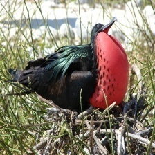

Frigate

¡Descubre al increíble Frigate!
- ¡Bienvenido a las Islas Galápagos, donde el Frigate destaca con sus impresionantes alas!
- ¿Sabías que los Frigates son conocidos por sus alas grandes y sus habilidades de vuelo asombrosas? ¡Como aviones acrobáticos en el cielo! 🛩️🐦
- Su nombre científico es Fregata, pero puedes llamarlos simplemente "Frigates". ¡Un nombre que suena tan elegante como ellos vuelan!
- Les encanta volar alto y nadar en el océano, ¡así que puedes verlos desde tierra o mar!
- Recuerda admirarlos desde lejos y disfrutar de su majestuosidad. ¡Que tengas un encuentro mágico con estos maravillosos voladores!
¡Descubre al Frigate!
- ¡Bienvenido a las Islas Galápagos, hogar de los fascinantes Frigates con sus impresionantes vuelos!
- Nombre Científico: Fregata
- ¿Sabías que los Frigates son famosos por sus vuelos acrobáticos y sus alas largas? ¡Una verdadera maravilla aérea!
- Estado de Conservación: Varía según la especie, algunas están clasificadas como preocupación menor.
- ¿Dónde verlos? Puedes avistar Frigates desde tierra o mar, especialmente durante sus vuelos de cortejo.
- ¡Curiosidad turística! Los machos inflan sus gargantas rojas para atraer a las hembras durante la temporada de apareamiento. ¡Un espectáculo natural impresionante!
- Recuerda ser respetuoso con su entorno y disfrutar de su belleza desde una distancia segura. ¡Buen viaje!
Información para biólogos:
- Nombre Científico: Fregata
- Estado de Conservación: Varía según la especie, algunas especies están clasificadas como preocupación menor, mientras que otras están en la categoría de casi amenazadas.
- Distribución Geográfica: Amplia distribución en océanos tropicales y subtropicales, incluyendo las Islas Galápagos.
- Descubrimiento y Nomenclatura: El género Fregata incluye varias especies. El nombre científico deriva del latín "Frigates" que significa rápido o ágil.
- Hábitat: Oceánico, costero. Pueden pasar largos períodos en vuelo y descansar en el agua.
- Origen: Nativo
- Presencia en el Hábitat: Común, especialmente cerca de áreas con presencia de presas marinas.
- Dieta: Principalmente peces, calamares y otras presas marinas.
- Peso: Varía según la especie, generalmente alrededor de 1-1.5 kg.
- Comportamiento de Anidación: Construyen nidos en árboles o arbustos en colonias, con ciertas especies exhibiendo rituales de cortejo elaborados.
- Curiosidades Biológicas: Los machos de algunas especies inflan sus gargantas rojas durante la temporada de apareamiento para atraer a las hembras.
- Interacción con el Ecosistema: Contribuyen al equilibrio ecológico al controlar las poblaciones de peces y calamares en sus áreas de distribución.
- Nombres Relacionados: No hay nombres étnicos específicos.